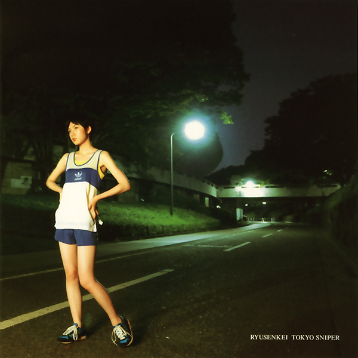

Day 64

流線形 - Time Machine Love - Tokyo Sniper - 2006
油管推荐又立功，有点大貫妙子的感觉。
あなたとの日々はあまりにも
やさしく微笑むから
心の中に残される
記憶を辿って行くから
夢の旅人は Go, go run
タイムマシーン乗り込む
いつか逢えるから Go, go, round
幾千の夜を越えて
さよならさえも言わないで
ここから消えてしまった
心の中にラベンダーの匂い
あなたの影を落とす
記憶の中には Sweet, sweet, days
眩しかった あなたが
時は過ぎるけど Sweet, sweet, round
めぐる季節越えて
大人になっても Long, long, way
少女だった あの頃
時をかけるから Long, long, time
星が降る夜を見つめて
夢の旅人は Go, go, run
タイムマシーン乗り込む
いつか逢えるから Go, go, round
幾千の夜を越えて